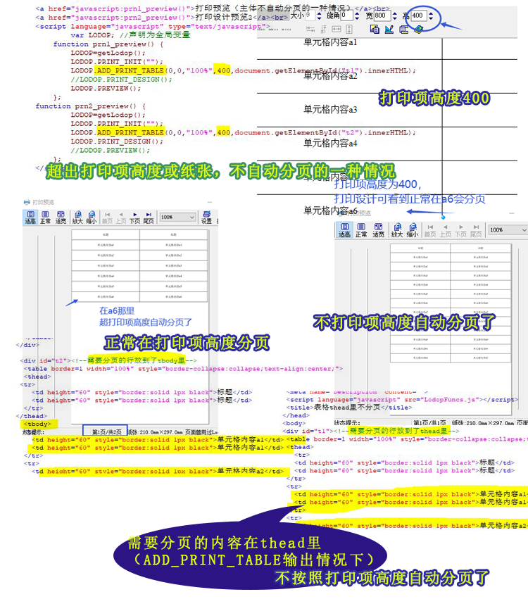

表体放到了thead里，且用ADD_PRINT_TABLE——表格不按照打印项高度自动分页的情况2
之前cnblod的博文：LODOP设置超文本不自动分页的方法
LODOP中ADD_PRINT_TABLE、HTM、HTML表格自动分页测试
简短现象：
现象：用的ADD_PRINT_TABLE输出，超出纸张没有自动分页，内容没有显示到第二页
现象：用的ADD_PRINT_TABLE输出，超出打印项高度，没有自动分页
等
超文本自动分页：正常情况下，超文本打印项超过打印项高度或纸张高度，会自动分页，之前博文中有一种现象不会自动分页，表格超出部分不显示了，没分到下一页，后来查看原来该客户是一个大table，里面一个tr行里套了个小table，ADD_PRINT_TABLE只能输出一个表格，且不切行，所以小table在大table的行里，所以导致该行超过打印项高度或超过纸张都不会分页。
ADD_PRINT_TABLE除了有不切行的特征，还有thead和tfoot每页输出的特征。
如果把表格主体不小心放到了thead里，相当于表格内部的眉脚项，表格也不会再按照高度分页了。
测试代码：
<script language="javascript" src="LodopFuncs.js"></script> <title>表格thead里不分页</title> </head> <body> <div id="t1"><!--需要分页的行放到了thead里--> <table border=1 width="100%" style="border-collapse:collapse;text-align:center;"> <thead> <tr> <td height="60" style="border:solid 1px black">标题</td> <td height="60" style="border:solid 1px black">标题</td> </tr> <tr> <td height="60" style="border:solid 1px black">单元格内容a1</td> <td height="60" style="border:solid 1px black">单元格内容a1</td> </tr> <tr> <td height="60" style="border:solid 1px black">单元格内容a2</td> <td height="60" style="border:solid 1px black">单元格内容a2</td> </tr> <tr> <td height="60" style="border:solid 1px black">单元格内容a3</td> <td height="60" style="border:solid 1px black">单元格内容a3</td> </tr> 。。。。。。。。。。省略。。。。。。。 </thead> <tbody> </tbody> </table> </div> <div id="t2"><!--需要分页的行放到了tbody里--> <table border=1 width="100%" style="border-collapse:collapse;text-align:center;"> <thead> <tr> <td height="60" style="border:solid 1px black">标题</td> <td height="60" style="border:solid 1px black">标题</td> </tr> </thead> <tbody> <tr> <td height="60" style="border:solid 1px black">单元格内容a1</td> <td height="60" style="border:solid 1px black">单元格内容a1</td> </tr> <tr> <td height="60" style="border:solid 1px black">单元格内容a2</td> <td height="60" style="border:solid 1px black">单元格内容a2</td> </tr> <tr> <td height="60" style="border:solid 1px black">单元格内容a3</td> <td height="60" style="border:solid 1px black">单元格内容a3</td> </tr> 。。。。。。。。。。。。。省略。。。。。 </tbody> </table> </div> <a href="javascript:prn1_preview()">打印预览（主体不自动分页的一种情况）</a><br> <a href="javascript:prn2_preview()">打印设计预览2</a><br> <script language="javascript" type="text/javascript"> var LODOP; //声明为全局变量 function prn1_preview() { LODOP=getLodop(); LODOP.PRINT_INIT(""); LODOP.ADD_PRINT_TABLE(0,0,"100%",400,document.getElementById("t1").innerHTML); //LODOP.PRINT_DESIGN(); LODOP.PREVIEW(); }; function prn2_preview() { LODOP=getLodop(); LODOP.PRINT_INIT(""); LODOP.ADD_PRINT_TABLE(0,0,"100%",400,document.getElementById("t2").innerHTML); LODOP.PRINT_DESIGN(); //LODOP.PREVIEW(); }; </script>
图示：
